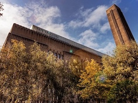
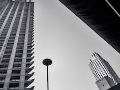

After working for four years as a lawyer, Annie retrained as a developer. Now she works as a product manager at a legal tech startup in London. Annie likes painting and eating noodles.
See for yourself!|  |
The TateTate Modern is a modern art gallery located in London. It is Britain's national gallery of international modern art and forms part of the Tate group (together with Tate Britain, Tate Liverpool, Tate St Ives and Tate Online). |
|  |
The BarbicanThe Barbican Centre was designed by Peter Chamberlin, Geoffry Powell and Christoph Bon of Chamberlin, Powell and Bon in the Brutalist style. It was voted "London's ugliest building" in a Grey London poll in September 2003. |
Museu Nacional d'Art de CatalunyaThe Museu Nacional d'Art de Catalunya, abbreviated as MNAC, is the national museum of Catalan visual art located in Barcelona, Catalonia, Spain. Situated on Montjuïc hill, the museum is especially notable for its outstanding collection of romanesque church paintings. |
This page has been coded during the FullStack program @LeWagon. That was probably the best experience of my entire life.